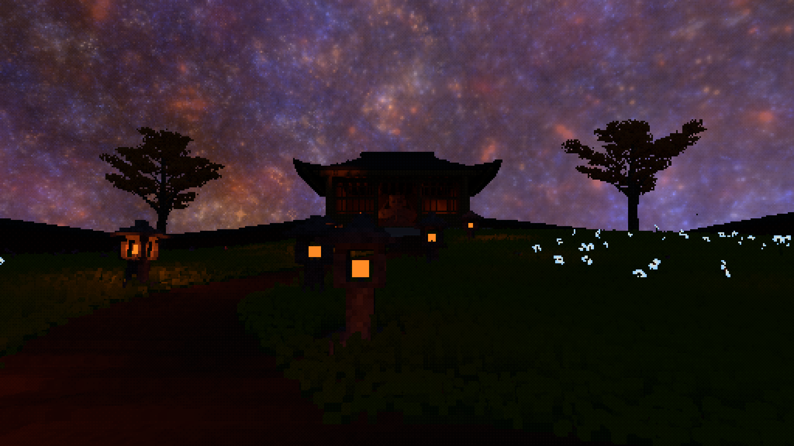
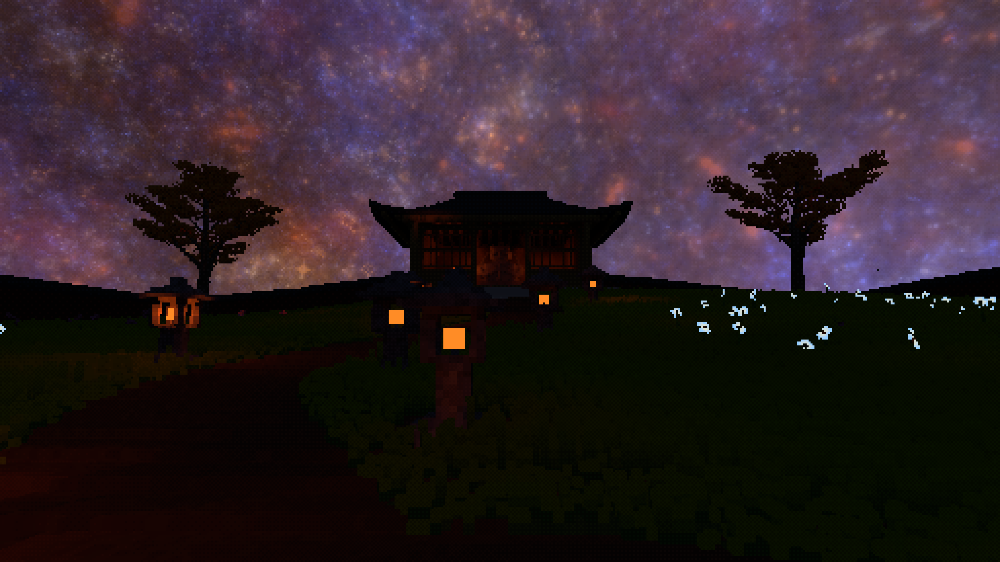

问题不只是阴影边缘太粗
接收点朝上，点光位于它的上方，却低于其上侧探针。使用原有表面侧支持权重时，下侧探针被排除，上侧探针对朝上法线的直接光却为零。
调用生产光源 evaluator 的独立复现：真实接收点响应约 711.108，探针响应插值为 0。场景没有任何遮挡物。
这是一个确认的失效方式，不是对真实庭院全部差异的充分解释。可执行诊断源码按“差异超过 5%”返回 1，预期应复现失败。
第二轮历史记录：下文交付状态指该轮结束时。后续：光源侧可见性候选（共享成立，性能仍未过关）↗
全程保持 32 体素间距。将距离衰减和方向项算回草的位置，确实修复了一个无障碍简化案例；但在真实石灯旁，候选仍靠大量原始查询恢复画面，最终短测反而更慢。
0567fe61，撤回提交 95cb32bb。该轮结束时，运行时代码恢复到本轮开始时的实现；开关不会运行本页的拆分候选。后续实现见上方第三轮链接。三幅都是相同间距、相同相机、相同曝光设置的原生 Release 截图。重点看石灯附近的草地。网页统一局部放大，点击可看未经处理的 2560×1440 原图。


独立实时运行，风、模拟与时序收敛没有冻结，不是逐像素等价比较。固定区域的线性 RGB 均值 (R−B)：B/A≈0.820，C/A≈1.106。后者比参考高约 10.6%，所以这个单侧“未明显丢暖色”检查不代表无损画质通过，也不能用它单独判定插值准确性。没有补亮、提高灯强或调曝光。
接收点朝上，点光位于它的上方，却低于其上侧探针。使用原有表面侧支持权重时，下侧探针被排除，上侧探针对朝上法线的直接光却为零。
调用生产光源 evaluator 的独立复现：真实接收点响应约 711.108，探针响应插值为 0。场景没有任何遮挡物。
这是一个确认的失效方式，不是对真实庭院全部差异的充分解释。可执行诊断源码按“差异超过 5%”返回 1，预期应复现失败。
探针缓存每个光源连接的 RGB 透射率；距离衰减、作用范围、接收面余弦与有限光源积分仍在真实草位置计算。
不读取递归反弹历史，不改变间接光采样，不改变灯强或材质。空间间距保持 32；每个接收点仍使用原来的 12 个有限光源积分样本。
缓存覆盖盒状发光体各面共 24 个稳定积分点身份，不是新增空间探针。缓存大小随灯数增长，不能声称任意灯数固定成本。
候选拒绝近源、不足、互相冲突或全遮挡的支持；探针与接收点之间另做短距离体素可见性查询。这能保守恢复原有照明，却也带来额外工作。数学分解有道理，不意味着当前共享表示和可信度策略已经有效。
共享命中数看起来很高，但非零共享结果为 0。如果只报告“约 99% 命中”和“对照误差为零”，就会掩盖有效灯光仍由原算法完成的事实。本组零误差主要证明回退保持一致，不证明加速路径完成了有用照明。
审计约每 1,024 个接收项取一个样本，并在相同 GPU 场景状态下与原始 evaluator 对照。记录分别覆盖发布前、初次可用与至少一次后续更新；没有拿启动期的不可用状态代表稳定结果。探针端每次 875,328 个方向样本同样零容差失败，但这不能替代接收点证据。
原始审计摘录 ↗。上述计数是这一次确定性抽样，不是全场统计，也不证明所有非零像素都回退，更不证明间距 32 在任何表示下都不可行。
| 模式 | 草光照缓存 GPU | 共享场更新 GPU | 实际 FPS | GPU 样本数 |
|---|---|---|---|---|
| A · 原始逐草 | 36.73 ms | — | 15.78 | 3 |
| B · 上轮共享响应 | 4.92 ms | 1.68 ms | 31.11 | 6 |
| C · 拆分候选（撤回） | 65.06 ms | 0.97 ms | 10.52 | 2 |
Apple M4 Pro · Release · 2560×1440 输出 · 8 灯 · 同一默认场景与夜间设置。三次顺序运行各 20 秒，取尾段约 6 秒。FPS 用帧计数推进量／墙钟计算；GPU 为稀疏日志样本中位数。审计未启用。
样本少、未交错重复，模拟与 DDGI 收敛持续变化；这是排查证据，不是可推广的硬件性能结论，也不是 RTX 3060 Ti 的重测。最终候选加了短连接查询且仍大量回退，不能沿用早期版本“成本接近原始”的结论。8 灯缓存约 27.1 MiB／使用中的帧槽，原有 DDGI 内存不变；内存尺寸相近不能抵消工作量回退。原始统计 ↗
cargo check、Release 与隐藏静音原生运行通过。74fdbf6b 归档中复现。点光夹具没有真实草接收项；它验证连接更新，不能代替上面的庭院接收点审计。生命周期摘录 ↗
运行时候选已撤回，生产源码恢复到本轮开始的实现；寺院、斜墙、无山地形、两株银杏、灯具、雕像与保存逻辑没有变化。
撤回后重新通过格式、cargo check、1829 个 app 测试与 4 个库测试、Release 构建、隐藏静音 smoke 及原生日志检查。
该轮交付的 Release 二进制是恢复后的版本，不是本页的失败候选。配置恢复为 time_of_day=0.47、grass_local_light_field=false。提交仅在本地，没有推送。
确认：直接响应整体插值会丢失接收点方向／距离结构，甚至在无障碍案例中归零。否决：仅拆出解析项，再以本轮保守连接支持恢复画面，尚不能保持旧实验的加速收益。
还不能断言：32 本身不可行，或任意更好的可见性表示都无效。本轮的共享表示与拒绝策略可能过于保守。后续若继续，应在仍固定 32的约束下研究可见性表示／可信度，并要求共享路径实际承担非零照明；不是继续全局加密、补亮，或先优化一个几乎只复用零值的路径。这一方向在本页所述的轮次中尚未实现；后续见第三轮证据。
原图没有裁剪、重采样、调色或修图；上方局部比较只使用 CSS 统一裁显。报告保留的是实验事实，不是当前实现说明。